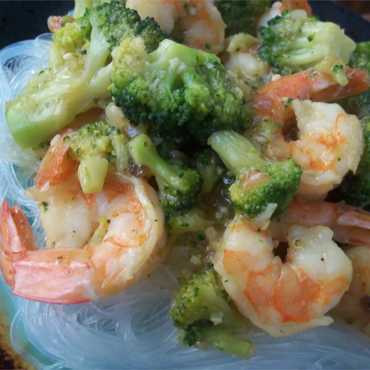

Indonesian Capcai

Indonesian capcai, also known as cap cay or chap chai, is a stir-fried vegetable dish
originating from Fujian cuisine. It is a popular dish in Indonesia and other Southeast Asian
countries. Capcai is typically made with a variety of vegetables, including cauliflower,
cabbage, carrots, broccoli, mushrooms, and baby corn. It is also often made with meat or
seafood, such as chicken, shrimp, or beef.
Ingredients
- 3 tablespoons vegetable oil
- 4 cloves garlic, minced
- 1 onion, thinly sliced
- 10 ounces peeled and deveined medium shrimp (30-40 per pound)
- 1 head bok choy, chopped
- 1 ½ cups chopped broccoli
- 1 ½ cups chopped cauliflower
- 1 large carrot, thinly sliced at an angle
- 3 green onions, chopped
- ⅔ cup water
- 2 tablespoons cornstarch
- 2 tablespoons fish sauce
- 2 tablespoons oyster sauce
- 1 teaspoon white sugar
- ½ teaspoon ground black pepper
- salt to taste
Directions
-
Step 1
Heat vegetable oil in a large saucepan over medium heat. Stir in garlic and onion; cook and
stir until onion has softened and turned translucent, about 5 minutes. Add shrimp, bok choy,
broccoli, cauliflower, carrot, and green onion. Pour in water, cover, and cook until shrimp
is no longer translucent in the center and vegetables are tender, about 15 minutes.
-
Step 2
Dissolve cornstarch into fish sauce in a small bowl. Stir into the cap cai along with oyster
sauce, sugar, and pepper; stir until thickened. Season with salt before serving.